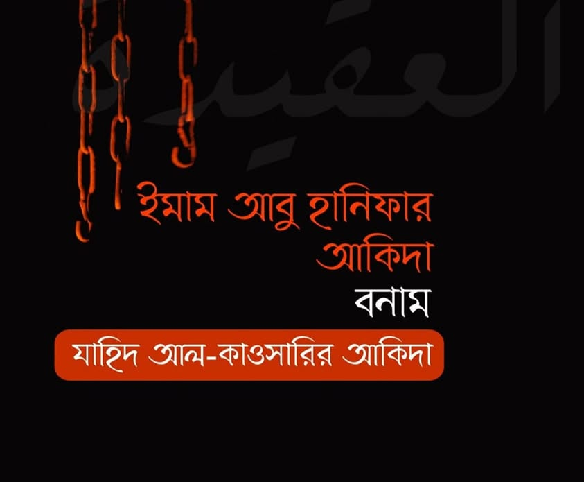

ইমাম আবু হানিফা রাহিমাহুল্লার আকিদাহ বনাম যাহিদ আল-কাওসারির আকিদাহ
২৯ আগস্ট, ২০২২
ইমাম আবু হানিফা রাহিমাহুল্লার আকিদাহ বনাম যাহিদ আল-কাওসারির আকিদাহ:
আবু হানিফা রাহিমাহুল্লাহ আহলে সুন্নাহ ওয়াল-জামাআতের ইমাম। তাঁর আকিদাহ ও সালাফে সালেহিনের আকিদাহ এক ও অভিন্ন। পক্ষান্তরে যাহিদ কাওসারি সাহেব জাহমিয়া-মুতাযিলা দ্বারা প্রভাবিত হয়ে তাদেরই প্রতিনিধিত্ব করে গেছেন। যে কারণে ইমাম আবু হানিফার আকিদার সাথে তার বিরোধ হওয়াই স্বাভাবিক। এর একটি নজির পেশ করব আজ। সাথে কাওসারি সাহেবের দ্বিমুখী নীতি ও হাদিসের ইমামগনের রায়কে সুবিধামতো ব্যবহারের প্রমাণ পাবেন। ইনশাআল্লাহ।
ইমাম আবু হানিফা রাহিমাহুল্লার আকিদাহ অনুযায়ী আল্লাহর কাছে কোনো মাখলুকের (হক) অধিকারের ওসিলা দিয়ে দোআ করা বৈধ নয়। মাকরূহে তাহরিমি। কিন্তু যাহিদ আল-কাওসারির মতে তা বৈধ।
ইমাম কুদুরি রাহ. বিশর বিন ওলিদের সূত্রে ইমাম আবু ইউসুফ রাহ. থেকে বর্ণনা করেন-
قال بشر بن الوليد: سمعت أبا يوسف يقول: قال أبو حنيفة: «لا ينبغي لأحد أن يدعو الله إلا به، قال: وأكره أن يقول: أسألك بمَعْقِد العزِّ من عرشك، وأكره أن يقول بحق فلان، وبحق أنبيائك ورسلك، وبحق البيت الحرام.
ইমাম আবু হানিফা রাহিমাহুল্লাহ বলেন:
কারো জন্য উচিত নয় আল্লাহর কাছে তাঁরই মাধ্যম ছাড়া দো‘আ করা। তিনি বলেন: আমি মাকরূহ (তাহরিমি) মনে করি এই বলে (দোয়া করা) যে, "আরশের সম্মানিত আসনের দোহাই দিয়ে তুমার কাছে প্রার্থনা করছি।' এবং মাহরূহ মনে করি 'অমুকের অধিকার, নবি-রাসূলগনের অধিকার বা বাইতুল হারামের অধিকারের ওসিলা নিয়ে প্রার্থনা করছি' বলা।
[ শরহু মুখতাসার কারখি, জালাউল আইনাইন, আলুসি- ৫১১, শরহুত তাহাবিয়্যাহ- ১/২৯৭ ]
এ ফতোয়ার সমর্থনে বিস্তারিত আলোচনা পাবেন-
[ হাশিয়াতু ইবনু আবিদিন শামি- ৬/৩৯৫-৩৯৭, হেদায়া- ৪/৩৮০, ফাতহুল কাদির ১০/৬৪, আল-ফাতাওয়াল হিন্দিয়্যাহ- ৫/৩১৮, নাতাইজুল আফকার- ১০/৬৪]
ইমাম বদর উদ্দিন আইনি হানাফি রাহ. তুহফাতুল মুলুক এর ব্যাখ্যাগ্রন্থে বলেন-
قوله: (وبحق فلان) أي يحرم أن يقول في دعائه: بحق فلان، أو بحق أنبيائك، وأوليائك، أو بحق البيت، أو بحق المشعر الحرام، لأنه لا حق للخلق على الله تعالى.
অর্থাৎ দো'আর মধ্যে 'অমুকের অধিকারের দোহাই বা আপনার নবি ও ওলিগনের অধিকারের দোহাই অথবা বাইতুল্লার অধিকার বা মাশআরে হারামের অধিকারের দোহাই' বলা হারাম। কেননা আল্লাহর উপর কোনো মাখলুকের অধিকার নেই। [ মিনহাতুস সুলুক- ৪১৯ ]
দেখুন, ইমাম আইনি রাহ. কোনো মাখলুকের অধিকারের উসিলা নেয়াকে স্পষ্ট হারাম ঘোষণা দিয়েছেন। সাথে কারণও বর্ণনা করেছেন।
আরও দেখুন- [ বাদাইউস সানাঈ' ফি তারতিবিশ শারাঈ- ৫/১২৬, বেদায়াতুল মুবতাদি- ২৪০ ]
অর্থাৎ হানাফি মাজহাবের সকল ইমাম এ ব্যাপারে একমত যে, কোনো মাখলুকের অধিকারের ওসিলা নিয়ে দোয়া করা বৈধ নয়- কেউ বলেছন মাকরূহে তাহরিমি, কারও মতে স্পষ্ট হারাম।
কিন্তু যাহিদ আল-কাওসারির মতে যেকোনো ওসিলা নিয়ে দোয়া করা বৈধ। চাই তা নবি-রাসূলের অধিকার বা কোনো ওলির অধিকার বা স্থানের অধিকারের ওসিলা হোক। [ মাকালাতুল কাওসারি- ৩৩৯-৩৫৬]
এ ক্ষেত্রে তিনি যতগুলো হাদিস দ্বারা দলিল দিতে চেয়েছেন, তার সবগুলো মুহাদ্দিসগনের নিকট চরম দুর্বল ও সমালোচিত। কোনোটি জালও বটে।
কাওসারির দলিল ও পর্যালোচনা-------------------
★ ফাতেমা বিনতে আসাদ রা. মৃত্যুর পর রাসূল ﷺ যে দোয়া করেছিলেন। তাতে রয়েছে-
(بحق نبيك والانبياء من قبلي)
অর্থাৎ আপনার নবি ও আমার পূর্বেকার নবিগনের অধিকারের ওসিলায় (তাঁকে ক্ষমা করুন)
[ তাবারানি, হিলয়াতুল আওলিয়া- ৩/১২১ ]
কিন্তু উক্ত হাদিসে রাওহ বিন সালাহ (روح بن صلاح) নামক রাবি মুহাদ্দিসগনের নিকট দুর্বল বলে পরিচিত।
তাকে দুর্বল আখ্যা দিয়েছেন বিখ্যাত সব রিজাল শাস্ত্রবিদ।
ইবনু আদি রাহ.
দারা কুতনি রাহ.
ইবনু মাকুলা রাহ.
আলি ইবনুল মাদিনি রাহ.
ইবনুল যাওজি রাহ.
বিস্তারিত- [ লিসানুল মিযান, তাহকিক আবু গুদ্দাহ ৩/৪৮০, আল-কামিন, ইবনু আদি, ৩/১০০৫, আয-যুআফা ওয়াল-মাতরুকুন- ১/২৮৭ পেইজ, ১২৪৩ নং জীবনি ]
পক্ষন্তরে যাহিদ আল-কাওসারি ইবনু হিব্বান ও তার ছাত্র ইমাম হাকিমের তাওসিক দ্বারা হাদিসকে সহিহ প্রমাণে চেষ্টা করে বলেন-
حديث فاطمة بنت أسد فيه لفظ رسول الله ﷺ (بحق نبيك والانبياء من قبلي) و صححه إبن حبان و الحاكم.
فيه روح بن صلاح وثقه ابن حبان و الحاكم.
[মাকালাত, মাহকুত তাকাউউল- ১৬]
অথচ, এ দু'জনকে কাওসারি নিজেই মুতাসাহিল আখ্যা দিয়েছেন।
وتساهل الحاكم وابن حبان في التصحيح مشهور.
সহিহ হুকুম লাগানোর ক্ষেত্রে ইমাম হাকিম ও ইবনু হিব্বানের তাসাহুল প্রসিদ্ধ। [মাকালাতুল- ১৮৫]
কথা সত্য। কিন্তু লক্ষ্য করুন, যখন হাকিম ও ইবনু হিব্বান রাহ. নিজের মতের বিরুদ্ধে কোনো হাদিসকে সহিহ বলেন, তখন কাওসারি তাসাহুল বলে উড়িয়ে দেন। আবার এখানে নিজের পক্ষে হওয়ায় শ্রেষ্ঠ হাদিস বেত্তাগনের মুকাবেলায় তাদেরকেই দলিল হিসেবে উপস্থিত করলেন। দ্বিমুখী নীতি আর কারে কয়!
★ অন্য এক হাদিস, আবু সাইদ খুদরি রা. থেকে বর্ণিত, সালাতের উদ্দেশ্যে মসজিদে যাওয়ার সময় দোয়া। যেখানে রয়েছে-
اللَّهُمَّ إِنِّي أَسْأَلُكَ بِحَقِّ السَّائِلِينَ عَلَيْكَ.
হে আল্লাহ! আপনার উপর থাকা প্রার্থনাকারীদের অধিকারের দোহাই দিয়ে আমি আপনার নিকট প্রার্থনা করছি। [ ইবনু মাজা-৭৭৮ ]
কিন্তু, উক্ত হাদিস ধারাবাহিক কয়েকজন দুর্বল রাবি কর্তৃক বর্ণিত। তারা হলেন, আতিয়্যাহ আল-আউফি,
ফুজায়েল বিন মারজুক ও ফজল বিন মুয়াফফাক।
هذا إسناد مسلسل بالضعفاء؛ عطية وهو العوفي، وفُضيل بن مرزوق، والفضل بن الموفّق كلهم ضعفاء.
[ হাশিয়াতুস সিন্দি আলা ইবনি মাজা- ১/২৬২, মিসবাহুস যুজাজাহ- ১/৯৮]
এতোজন দুর্বল রাবি যেখানে থাকে, তা দুর্বলতার চূড়ান্ত সীমায় উপনীত হতে বাধ্য। দলিল হিসবে গৃহীত হওয়ার প্রশ্নই ওঠে না। বাকি এ হাদিসের মুতাবাআত হিসেবে যত হাদিস পেশ করা হয়, এগুলোও চরম সমালোচিত ও দুর্বল।
তবে কাওসারি এখানে বেলাল রা. থেকে বর্ণিত একটি হাদিস দ্বারা শাওয়াহেদ-সমর্থন পেশ করেছেন। তিনি লেখেন-
واخرج ابن السني في عمل اليوم والليلة بسند فيه الوازع عن بلال وليس فيه عطية ولا مرزوق ولا ابن الموفق (اللهم بحق السائلين عليك) تظهر انه لم ينفرد عطية ولا ابن مرزوق ولا ابن الموفق.
অর্থাৎ "হে আল্লাহ! আপনার উপর থাকা প্রার্থনাকারীদের অধিকারের দোহাই দিয়ে আমি আপনার নিকট প্রার্থনা করছি" এটি বেলাল রা. থেকেও বর্ণিত হয়েছে। সেখানে (অভিযুক্ত রাবি) আতিয়্যাহ, মারযুক বা ইবনুল মুয়াফফাক, কেউ নেই। [ মাকালাতুল কাওসারি- ৩৫৩]
কিন্তু কথা হচ্ছে, উক্ত বর্ণনায় আল-ওয়াযি' বিন নাফি' আল-উকাইলি নামক রাবির ব্যাপারে যে সমালোচনা রয়েছে, তা পূর্বের সকল বর্ণনা থেকে এটি আরও নিম্নমানের বলে প্রমাণ করে। কেননা সে মুনকারুল হাদিস ও পরিত্যাজ্য রাবি হিসেবে আখ্যায়িত। তার ব্যাপারে মুহাদ্দিসগনের জারাহ-
ইমাম বুখারি রাহ. বলেন- مُنْكَرُ الْحَدِيثِ
ইমাম আহমদ রাহ. বলেন- ليس بثقة.
ইয়াহিয়া বিন মাঈন রাহ. বলেন- لَيْسَ بِثِقَةٍ.
ইমাম নাসাই রাহ. বলেন- مَتْرُوكٌ
ইমাম উকাইলি রাহ. বলেন-
سَأَلْتُ أَبِي عَنْه , فَقَالَ: لَيْسَ حَدِيثُهُ بِشَيْءٍ.
ইমাম ইবনু আদি রাহ. বলেন-
عامة ما يرويه الوازع غير محفوظ.
ইবনু দাউদ রাহ. বলেন- ليس بثقة.
ইবনু হাজার রাহ. উল্লেখ করেন-
وذكره الدولابي والعقيلي والساجي، وَابن الجارود، وَابن السكن وجماعة في الضعفاء.
ইমাম আবু হাতিম রাহ. বলেন-
لا يعتمد على روايته لأنه متروك الحديث. وقال أيضًا: ضعيف الحديث جدا ليس بشيء. وقال لابنه: اضرب على أحاديثه فإنها منكرة ولم يقرأها.
ইমাম বগভি রাহ. বলেন-
ضعيف جدا.
ইমাম হাকিম রাহ. বলেন-
روى أحاديث موضوعة.
[ লিসানুল মি'যান- ৮/৩৬৭, মিযামুল ই'তিদান, ৪/৩২৭, তারিখুল ইসলাম, জাহাবি, ৩/১০০৪,, আয-যুয়াফাউল কাবির, উকাইলি- ৪/৩৩০]
এক কথায়, ওয়াযি' আল-উকাইলি যে মুনকারুল হাদিস, চরম দুর্বল ও মাতরুক- এ ব্যাপারে সকল মুহাদ্দিস ঐকমত্য। এরকম রাবির বর্ণনা কখনো মুতাবে, বা শাহেদ হিসেবেও গৃহীত হয় না; দলিল হওয়া তো দূর কি বাত। সর্বোপরি 'অধিকারের ওসিলা' সংক্রান্ত সকল বর্ণনা ত্রুটিযুক্ত। আমল ও আকিদায় দলিল হওয়ার অনুপযোগী।
যে কারণে ইমাম আবু হানিফা রাহিমাহুল্লাহ এবং সকল হানাফি মুহাদ্দিস ও ফকিহ একমত যে, কোনো মাখলুকের অধিকারের ওসিলা নিয়ে দোয়া করা বৈধ নয়। কিন্তু যাহেদ কাওসারির কাছে তা বৈধ। এবার আপনিই ঠিক করুন, কার আকিদাহ সঠিক, কার আকিদাহ গ্রহণ করবেন- কাওসারি না আবু হানিফা রাহিমাহুল্লাহ।
